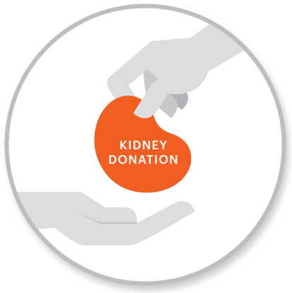

Home
Looking for a Living Donor
Donating a Kidney
THE
BIG
ASK

Looking for a Living Donor
Looking for a Living Donor
How to Make the Ask
The Top 3 Reasons People Are Afraid to Ask for a Kidney—and How to Overcome Them
For Professionals
Resources for hospital-based professional Living Donor Advocates